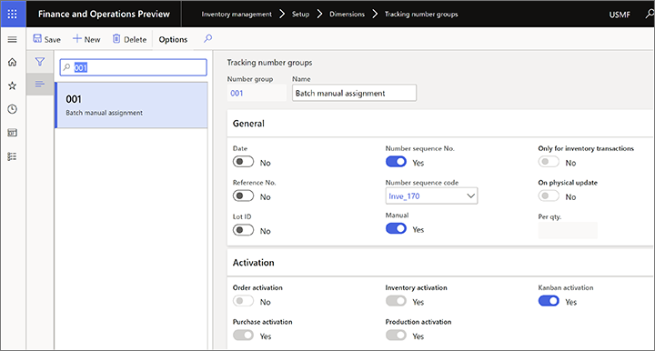
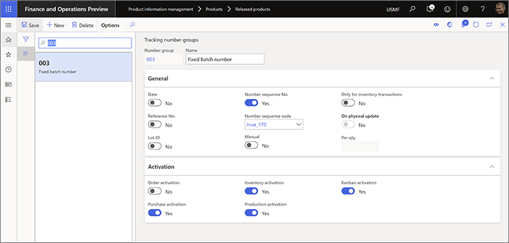
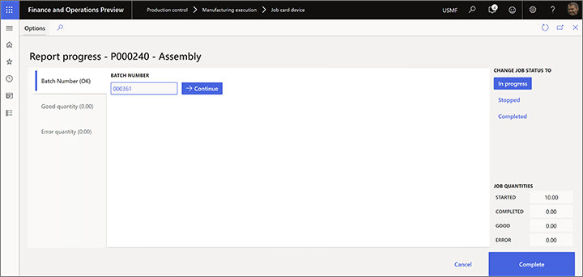
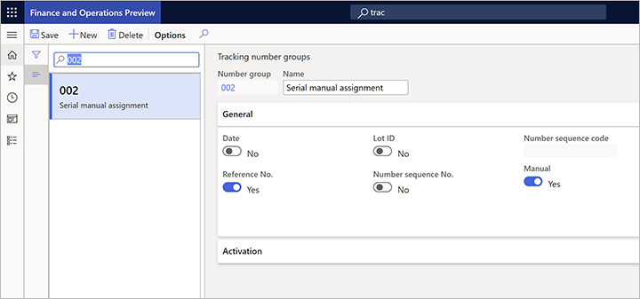
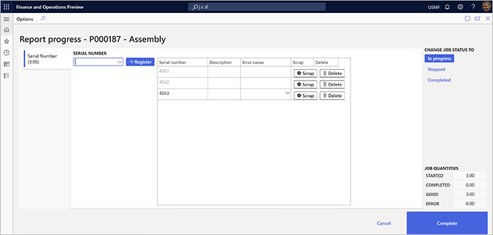
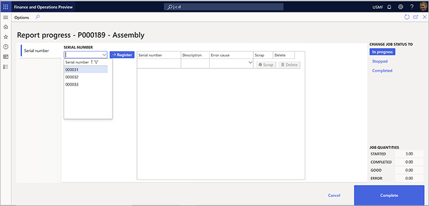
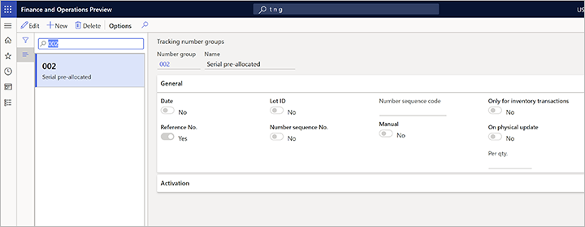
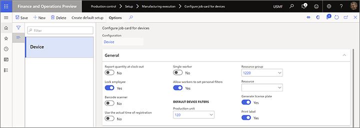

Vom Einzelvorgangskartengerät als erledigt melden
Important
Dynamics 365 for Finance and Operations hat sich zu speziell entwickelten Anwendungen entwickelt, mit denen Sie bestimmte Geschäftsfunktionen verwalten können. Weitere Informationen zu diesen Änderungen finden Sie im Dynamics 365-Lizenzierungshandbuch.
Arbeiter benutzen die Seite Fortschritt melden auf dem Einzelvorgangskartengerät, um Mengen zu melden, die für einen Produktionsjob abgeschlossen wurden. In diesem Thema wird beschrieben, wie Sie verschiedene Optionen einrichten, mit denen festgelegt wird, wie Mitarbeiter auf dieser Seite als erledigt melden können und was als Nächstes geschieht. Folgende Optionen stehen zur Auswahl:
- Steuern Sie, ob und wie Mengen, die als fertig gemeldet werden, dem Bestand hinzugefügt werden.
- Steuern Sie, ob und wie Chargennummern generiert und angewendet werden, wenn die Berichterstellung abgeschlossen ist.
- Steuern Sie, ob und wie Seriennummern generiert und angewendet werden, wenn die Berichterstellung abgeschlossen ist.
- Steuern Sie, ob und wie als erledigt an ein Kennzeichen gemeldet wird.
Steuern Sie, ob Mengen, die als fertig gemeldet werden, dem Inventar hinzugefügt werden
Führen Sie die folgenden Schritte aus, um zu steuern, ob und wie die Mengen, die beim letzten Vorgang als fertig gemeldet wurden, zum Inventar hinzugefügt werden sollen.
Gehen Sie zu Produktionssteuerung > Einstellungen > Fertigungssteuerung > Produktionsparameterstandard.
Auf der Registerkarte Als fertig melden stellen Sie das Feld Aktualisieren Sie den fertigen Bericht online auf einen der folgenden Werte:
- Nein – Es wird keine Menge zum Inventar hinzugefügt, wenn Mengen bei der letzten Operation gemeldet werden. Der Status des Produktionsauftrags verändert sich jedoch nie.
- Status + Menge – Der Status des Fertigungsauftrags ändert sich in Als fertig gemeldet und die Menge wird als fertig im Inventar gemeldet.
- Menge – Die Menge wird im Bestand als fertig gemeldet, aber der Status des Produktionsauftrags ändert sich nie.
- Status – Es ändert sich nur der Status des Produktionsauftrags. Es werden dem Bestand keine Mengen hinzugefügt, wenn Mengen beim letzten Vorgang gemeldet werden.
Note
Mengen werden im Bestand nicht nachverfolgt, wenn die Vorgänge, für die sie als abgeschlossen gemeldet werden, nicht als letzte Vorgänge definiert sind. Diese Mengen können jedoch verwendet werden, um den Fortschritt anzuzeigen. Sie können auch in Regeln aufgenommen werden, die steuern, ob Mitarbeiter die nächste Operation starten können, bevor ein definierter Schwellenwert für die gemeldeten Mengen der vorherigen Operation erreicht ist. Sie können diese Regeln auf der Registerkarte Mengenvalidierung auf der Seite Produktionsauftragsstandards definieren.
Weitere Informationen zum Arbeiten mit der Seite Standardwerte für Fertigungsaufträge finden Sie unter Produktionsparameter in der Fertigungsausführung.
Chargengesteuerte Artikel als fertig melden
Das Einzelvorgangskartengerät unterstützt drei Szenarien für die Berichterstellung für Chargenelemente. Diese Szenarien gelten sowohl für Artikel, die für erweiterte Lagerprozesse aktiviert sind, als auch für Artikel, die für erweiterte Lagerprozesse nicht aktiviert sind.
- Manuell zugewiesene Chargennummern – Mitarbeiter geben eine benutzerdefinierte Chargennummer ein. Diese Chargennummer stammt möglicherweise von einer externen Quelle, die dem System nicht bekannt ist.
- Vordefinierte Chargennummern – Arbeitskräfte wählen eine Chargennummer in einer Liste von Chargennummern aus, die das System automatisch generiert, bevor der Produktionsauftrag an das Einzelvorgangskartengerät freigegeben wird.
- Feste Chargennummern – Mitarbeiter geben keine Chargennummer ein oder wählen keine aus. Stattdessen weist das System dem Fertigungsauftrag automatisch eine Chargennummer zu, bevor er freigegeben wird.
Funktion im System aktivieren
Damit Ihre Einzelvorgangskartengeräte während der Berichterstellung eine Chargennummer als abgeschlossen akzeptieren können, müssen Sie die Funktionsverwaltung verwenden, um die folgenden Funktionen zu aktivieren (in dieser Reihenfolge):
- Verbesserte Benutzerfreundlichkeit für den Berichtsstatusdialog im Einzelvorgangs-Kartengerät
- Aktivieren Sie diese Option, um Chargen- und Seriennummern einzugeben, während die Fertigmeldung vom Einzelvorgangs-Kartengerät (Vorschau) abgeschlossen wird
Produkte konfigurieren, die Chargennummernberichterstattung erfordern
Führen Sie die folgenden Schritte aus, damit ein Produkt eines der verfügbaren chargengesteuerten Szenarien unterstützt:
- Wechseln Sie zu Produktinformationsverwaltung > Produkte > Freigegebene Produkte.
- Wählen Sie das Produkt zum Konfigurieren.
- Auf dem Inforegister Bestand verwalten im Feld Chargennummerngruppe wählen Sie die Nachverfolgungs-Nummerngruppe aus, die zur Unterstützung Ihres Szenarios eingerichtet ist.
Note
Wenn einem chargengesteuerten Produkt keine Chargennummerngruppe zugeordnet ist, bietet das Einzelvorgangskartengerät standardmäßig eine manuelle Eingabe der Chargennummer, während der Berichterstellung als abgeschlossen gemeldet wird.
In den folgenden Abschnitten wird beschrieben, wie Sie Nachverfolgungs-Nummerngruppen einrichten, um jedes der drei Szenarien für die Berichterstellung für Chargenpositionen zu unterstützen.
Richten Sie eine Nachverfolgungs-Nummerngruppe ein, mit der Mitarbeiter manuell eine Chargennummer zuweisen können
Um Chargennummern manuell einzurichten, folgen Sie diesen Schritten, um ein Nachverfolgungs-Nummerngruppe einzurichten.
Gehen Sie zu Bestandsverwaltung > Installieren > Ausmaße > Nachverfolgung von Nummerngruppen.
Erstellen oder wählen Sie die einzurichtende Nachverfolgungs-Nummerngruppe.
Auf dem Inforegister Allgemein stellen Sie die Option Manuell auf Ja fest.

Stellen Sie andere Werte nach Bedarf ein und wählen Sie diese Nachverfolgungs-Nummerngruppe als Chargennummerngruppe für freigegebene Produkte aus, für die Sie dieses Szenario verwenden möchten.
Wenn Sie dieses Szenario verwenden, wird das Feld Chargennummer Fortschritt melden auf der Seite auf dem Einzelvorgangskartengerät ein Textfeld anzeigen, in das Mitarbeiter einen beliebigen Wert eingeben können.

Richten Sie eine Nachverfolgungs-Nummerngruppe ein, die eine Liste vordefinierter Chargennummern enthält
Um eine Liste vordefinierter Chargennummern einzurichten, folgen Sie diesen Schritten, um ein Nachverfolgungs-Nummerngruppe einzurichten.
Gehen Sie zu Bestandsverwaltung > Installieren > Ausmaße > Nachverfolgung von Nummerngruppen.
Erstellen oder wählen Sie die einzurichtende Nachverfolgungs-Nummerngruppe.
Auf dem Inforegister Allgemein stellen Sie die Option Nur für Bestandtransaktionen auf Ja fest.
Verwenden Sie das Feld Pro Menge zum Aufteilen der Chargennummern pro Menge, basierend auf dem von Ihnen eingegebenen Wert. Zum Beispiel haben Sie einen Fertigungsauftrag für zehn Stück und das Feld Pro Menge ist auf 2 festgesetzt. In diesem Fall werden dem Fertigungsauftrag beim Erstellen fünf Chargennummern zugewiesen.

Stellen Sie andere Werte nach Bedarf ein und wählen Sie diese Nachverfolgungs-Nummerngruppe als Chargennummerngruppe für freigegebene Produkte aus, für die Sie dieses Szenario verwenden möchten.
Wenn Sie dieses Szenario verwenden, wird das Feld Chargennummer, das die Seite Fortschritt melden auf dem Einzelvorgangskartengerät bereitstellt, eine Dropdown-Liste anzeigen, in das Mitarbeiter einen beliebigen Wert eingeben können.

Richten Sie eine Nachverfolgungs-Nummerngruppe ein, die automatisch Chargennummern zuweist
Wenn Chargennummern ohne Eingabe durch den Mitarbeiter automatisch zugewiesen werden sollen, führen Sie die folgenden Schritte aus, um eine Nachverfolgungsnummerngruppe einzurichten.
Gehen Sie zu Bestandsverwaltung > Installieren > Ausmaße > Nachverfolgung von Nummerngruppen.
Erstellen oder wählen Sie die einzurichtende Nachverfolgungs-Nummerngruppe.
Auf dem Inforegister Allgemein stellen Sie die Option Nur für Bestandtransaktionen auf Nein fest.
Stellen Sie die Option Manuell auf Nein ein.

Stellen Sie andere Werte nach Bedarf ein und wählen Sie diese Nachverfolgungs-Nummerngruppe als Chargennummerngruppe für freigegebene Produkte aus, für die Sie dieses Szenario verwenden möchten.
Wenn Sie dieses Szenario verwenden, wird das Feld Chargennummer, das die Seite Fortschritt melden anzeigt, auf dem Einzelvorgangskartengerät einem Wert anzeigen, aber die Mitarbeiter können diesen nicht bearbeiten.

Seriengesteuerte Artikel als fertig melden
Das Einzelvorgangskartengerät unterstützt drei Szenarien für die Berichterstellung für seriengesteuerte Artikel. Diese Szenarien gelten sowohl für Artikel, die für erweiterte Lagerprozesse aktiviert sind, als auch für Artikel, die für erweiterte Lagerprozesse nicht aktiviert sind.
- Manuell zugewiesene Seriennummern – Mitarbeiter geben eine benutzerdefinierte Seriennummer ein. Diese Seriennummer stammt möglicherweise von einer externen Quelle, die dem System nicht bekannt ist.
- Vordefinierte Seriennummern – Arbeitskräfte wählen eine Seriennummer in einer Liste von Seriennummern aus, die das System automatisch generiert, bevor der Produktionsauftrag an das Einzelvorgangskartengerät freigegeben wird.
- Feste Seriennummer – Mitarbeiter geben keine Seriennummer ein oder wählen keine aus. Stattdessen weist das System dem Fertigungsauftrag automatisch eine Seriennummer zu, bevor er freigegeben wird.
Funktion im System aktivieren
Damit Ihre Einzelvorgangskartengeräte während der Berichterstellung eine Seriennummer als abgeschlossen akzeptieren können, müssen Sie die Funktionsverwaltung verwenden, um die folgenden Funktionen zu aktivieren (in dieser Reihenfolge):
- Verbesserte Benutzerfreundlichkeit für den Berichtsstatusdialog im Einzelvorgangs-Kartengerät
- Aktivieren Sie diese Option, um Chargen- und Seriennummern einzugeben, während die Fertigmeldung vom Einzelvorgangs-Kartengerät (Vorschau) abgeschlossen wird
Produkte konfigurieren, die Seriennummernberichterstattung erfordern
Führen Sie die folgenden Schritte aus, damit ein Produkt eines der verfügbaren seriengesteuerten Szenarien unterstützt:
Um ein Szenario zu aktivieren, führen Sie folgende Schritte aus.
- Wechseln Sie zu Produktinformationsverwaltung > Produkte > Freigegebene Produkte.
- Wählen Sie das Produkt zum Konfigurieren.
- Wählen Sie auf dem Inforegister Bestand verwalten im Feld Seriennummerngruppe die Nachverfolgungs-Nummerngruppe aus, die zur Unterstützung Ihres Szenarios eingerichtet ist.
Note
Wenn einem seriengesteuerten Produkt keine Seriennummerngruppe zugeordnet ist, bietet das Einzelvorgangskartengerät während der Berichterstellung eine manuelle Eingabe der Seriennummer, die als abgeschlossen gemeldet wird.
In den folgenden Abschnitten wird beschrieben, wie Sie Nachverfolgungs-Nummerngruppen einrichten, um jedes der drei Szenarien für die Berichterstellung für seriengesteuerte Artikel zu unterstützen.
Eine Nachverfolgungs-Nummerngruppe einrichten, mit der Mitarbeiter manuell eine Seriennummer zuweisen können
Um Seriennummern manuell zuzuweisen, folgen Sie diesen Schritten, um ein Nachverfolgungs-Nummerngruppe einzurichten.
Gehen Sie zu Bestandsverwaltung > Installieren > Ausmaße > Nachverfolgung von Nummerngruppen.
Erstellen oder wählen Sie die einzurichtende Nachverfolgungs-Nummerngruppe.
Auf dem Inforegister Allgemein stellen Sie die Option Manuell auf Ja fest.

Stellen Sie andere Werte nach Bedarf ein, und wählen Sie diese Nachverfolgungs-Nummerngruppe als Seriennummerngruppe für freigegebene Produkte aus, für die Sie dieses Szenario verwenden möchten.
Wenn Sie dieses Szenario verwenden, ist das Feld Seriennummer, das auf der Seite Fortschritt melden auf dem Einzelvorgangskartengerät angezeigt wird, ein Textfeld, in das Mitarbeiter einen beliebigen Wert für die Seriennummer eingeben können. Bei der Eingabe eines Wertes wird dieser zur Seriennummernliste hinzugefügt. In dieser Liste können Mitarbeiter Folgendes durchführen:
- Um eine Seriennummer als verschrottet zu markieren, wählen Sie die Schaltfläche Ausschuss für die entsprechende Zeile. Der Mitarbeiter wird aufgefordert, eine Fehlerursache anzugeben.
- Um eine Seriennummer zu löschen, wählen Sie die Schaltfläche Löschen für die entsprechende Zeile.

Eine Nachverfolgungs-Nummerngruppe einrichten, die eine Liste vordefinierter Seriennummern enthält
Um eine Liste vordefinierter Seriennummern anzugeben, folgen Sie diesen Schritten, um eine Nachverfolgungs-Nummerngruppe einzurichten.
Gehen Sie zu Bestandsverwaltung > Installieren > Ausmaße > Nachverfolgung von Nummerngruppen.
Erstellen oder wählen Sie die einzurichtende Nachverfolgungs-Nummerngruppe.
Auf dem Inforegister Allgemein stellen Sie die Option Nur für Bestandtransaktionen auf Ja fest.
Verwenden Sie das Feld Pro Menge zum Teilen der Seriennummern pro Menge von eins.

Stellen Sie andere Werte nach Bedarf ein, und wählen Sie diese Nachverfolgungs-Nummerngruppe als Seriennummerngruppe für freigegebene Produkte aus, für die Sie dieses Szenario verwenden möchten.
Wenn Sie dieses Szenario verwenden, ist das Feld Seriennummer, das auf der Seite Fortschritt melden auf dem Einzelvorgangskartengerät angezeigt wird, eine Dropdownliste, in der Mitarbeiter einen vordefinierten Wert auswählen müssen.

Eine Nachverfolgungs-Nummerngruppe einrichten, die automatisch Seriennummern zuweist
Wenn eine Seriennummer ohne Eingabe durch den Mitarbeiter automatisch zugewiesen werden soll, führen Sie die folgenden Schritte aus, um eine Nachverfolgungs-Nummerngruppe einzurichten.
Gehen Sie zu Bestandsverwaltung > Installieren > Ausmaße > Nachverfolgung von Nummerngruppen.
Erstellen oder wählen Sie die einzurichtende Nachverfolgungs-Nummerngruppe.
Auf dem Inforegister Allgemein stellen Sie die Option Nur für Bestandtransaktionen auf Nein fest.
Stellen Sie die Option Manuell auf Nein ein.

Stellen Sie andere Werte nach Bedarf ein, und wählen Sie diese Nachverfolgungs-Nummerngruppe als Seriennummerngruppe für freigegebene Produkte aus, für die Sie dieses Szenario verwenden möchten.
Wenn Sie dieses Szenario verwenden, zeigt das Feld Seriennummer, das auf der Seite Fortschritt melden auf dem Einzelvorgangskartengerät angezeigt wird, einen Wert an, aber die Mitarbeiter können diesen nicht bearbeiten. Dieses Szenario ist nur relevant, wenn ein Fertigungsauftrag für eine Menge von einem Stück eines seriennummerngesteuerten Artikels erstellt wird.

Als abgeschlossen an eine Kennzeichnung melden
Fortgeschrittene Lagerprozesse können die Kennzeichenabmessung verwenden, um den Lagerbestand an Lagerstandorten zu verfolgen, die für diesen Zweck eingerichtet wurden. In diesem Fall ist dies Kennzeichnung erforderlich, wenn ein Mitarbeiter Mengen als fertig meldet.
Kennzeichenbeschriftungs und Druck aktivieren
Um die in diesem Abschnitt beschriebenen Funktionen nutzen zu können, müssen Sie die Funktionsverwaltung verwenden, um die folgenden Funktionen zu aktivieren (in dieser Reihenfolge):
- Das Kennzeichen für Fertigmeldung wurde zum Einzelvorgangslistengerät hinzugefügt.
- Aktivieren Sie die automatische Generierung der Kennzeichennummer, wenn die Berichtserstellung im Einzelvorgangskartengerät abgeschlossen wurde
- Beschriftung vom Einzelvorgangs-Kartengerät aus drucken
Legen Sie die Kennzeichnung als abgeschlossen fest
Führen Sie die folgenden Schritte aus, um zu steuern, ob Mitarbeiter eine vorhandene Kennzeichnung wiederverwenden oder eine neue Kennzeichnung erstellen sollen, wenn sie Mengen als fertig melden.
Wechseln Sie zu Produktionssteuerung > Einrichtung > Fertigungssteuerung > Einzelvorgangsliste für Geräte konfigurieren.
Legen Sie folgende Optionen für jedes Gerät fest:
- Kennzeichen erstellen – Setzen Sie diese Option auf Ja, um jedes Mal eine neue Kennzeichnung für jeden Bericht als beendet zu melden. Legen Sie es auf Nein fest, wenn eine bestehende Kennzeichnung als beendet verwendet werden soll.
- Etikett drucken – Legen Sie diese Option auf Ja fest, wenn eine Arbeitskraft ein Kennzeichenetikett für jeden Bericht als beendet drucken muss. Legen Sie es auf Nein fest, wenn kein Etikett erforderlich ist.

Note
Um das Etikett zu konfigurieren, gehen Sie zu Lagerortverwaltung > Einstellung > Dokumentrouting > Dokumentrouting. Weitere Informationen finden Sie unter Aktivieren Sie das Drucken von Kennzeichenetiketten.